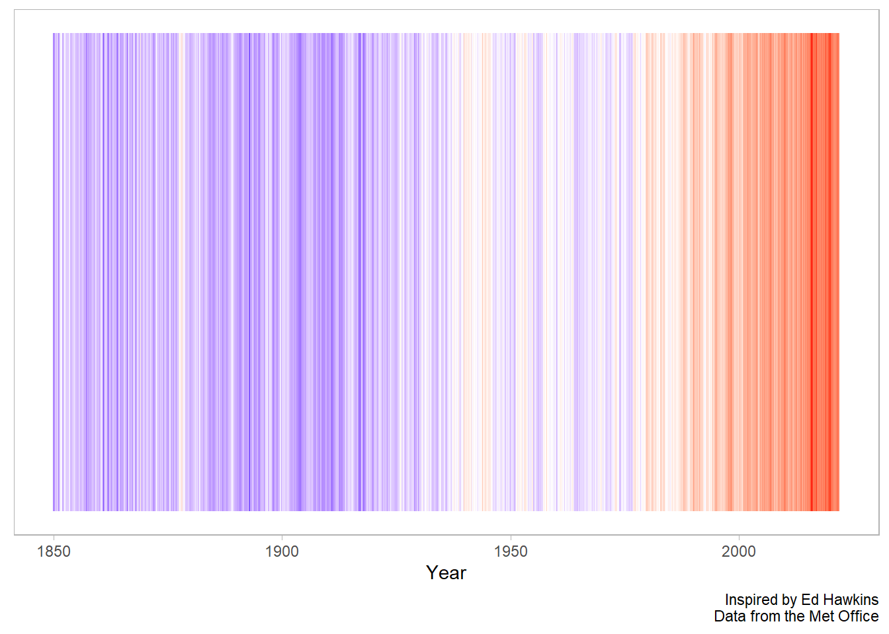

i Use `spec()` to retrieve the full column specification for this data.
i Specify the column types or set `show_col_types = FALSE` to quiet this message.
What about averaging across the year? We can make use of the lubridate package again! This time we use the year function to get the year (as a number) out of the time column.
We can see that as time goes on, we get better at measuring things with a lower margin of error.
Recreating the figure
df%>%ggplot(aes(time, y =1, fill =anomaly_deg_c))+geom_tile()+scale_fill_gradient2(low ="blue", high ="red", mid ="white", midpoint =0)+theme(legend.position ="none",
panel.grid =element_blank(),
axis.text.y =element_blank(),
axis.ticks.y =element_blank())+labs(x ="Year",
y =NULL,
caption ="Inspired by Ed Hawkins\nData from the Met Office")

# jpeg(filename = "figures/Show_your_stripes.jpeg",# height = 6,# width = 8,# units = "in",# res = 1000)df%>%mutate(year =lubridate::year(time))%>%group_by(year)%>%mutate(across(anomaly_deg_c:upper_confidence_limit_97_5_percent, mean))%>%ungroup()%>%distinct(year, .keep_all =T)%>%ggplot(aes(time, y =1, fill =anomaly_deg_c))+geom_tile()+scale_fill_gradient2(low ="blue", high ="red", mid ="white", midpoint =0)+theme(
legend.position ="none",
panel.grid =element_blank(),
axis.text.y =element_blank(),
axis.ticks.y =element_blank())+labs(
x ="Year",
y =NULL,
caption ="Inspired by Ed Hawkins\nData from the Met Office")